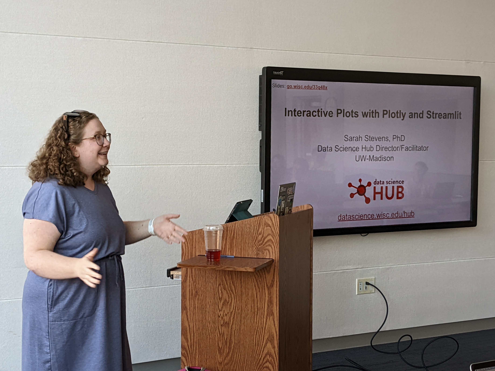

Workshop: Interactive Plots Using Plotly and Streamlit



Come participate in a visualization workshop facilitated by our colleagues from the UW Data Science Hub. You are encouraged to bring your laptop to engage in a hands-on session to create and share interactive dashboards using Streamlit and Plotly. Our skilled instructors will provide guidance as we work together to build on a cloud platform and continuously update our demo app. During the one-hour walkthrough, we will assess real data and demonstrate how to refine existing examples.
The presenters for this workshop will be Sarah Stevens and Chris Endemann. Sarah Stevens is Data Science Hub Director and earned her PhD in microbiology. As part of the Data Science Hub, she helps researchers learn and apply data science to their research projects. As a data science facilitator, Chris Endemann provides consulting services and teaches computational workshops that empower researchers to reproducibly analyze, model, and gain insights from data.